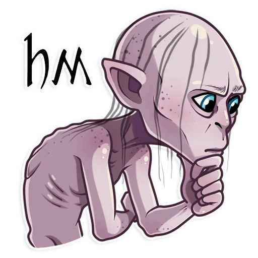
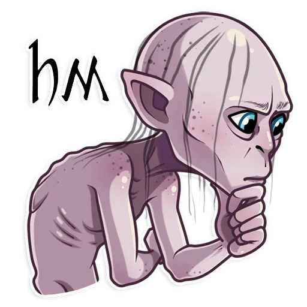

Présentation
Le village de Matamata est le lieu le plus emblématique du Seigneur des Anneaux. En effet, c'est ici que l'aventure commence. Démonté une première fois à la fin du tournage de la première trilogie, il fut remonté pour les scènes du Hobbit, après quoi il restera en place afin d'être visité par les touristes, fans de la licence.


Les personnages
Ci-dessous, quelques personnages importants qui font leur apparition dans ce lieu.
Frodon Sacquet

Frodon est le protagoniste de la trilogie.
Samsagace Gamegie

Sam est le meilleur ami de Frodon. Il l'accompagnera et le soutiendra tout au long de son voyage.
Meriadoc Brandibouc et Peregrin Touc

Merri et Pippin sont des cousins de Frodon et se retrouvent donc mêlés à son aventure.
Bilbon Sacquet

Bilbon est l'oncle de Frodon. Il est l'élement déclencheur de la trilogie.
Gandalf LeGris

Gandalf est un ami de Bilbon Sacquet, avec qui il a partagé d'autres aventures par le passé (Trilogie du Hobbit). Il aidera Frodon afin que ce dernier puisse accomplir la mission qui lui a été confiée.
Pour aller plus loin
| La Communauté de l'Anneau | Les Deux Tours | Le Retour du Roi | |
|---|---|---|---|
| Année de sortie | 2001 | 2002 | 2003 |
| Durée du tournage | 15 Mois | ||
| Budget | 285 Millions de Dollars US | ||